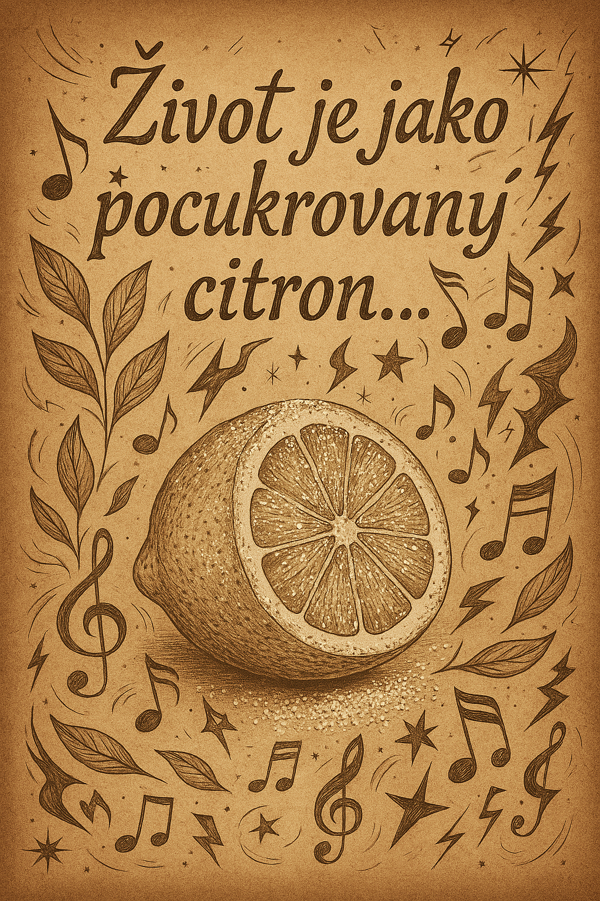
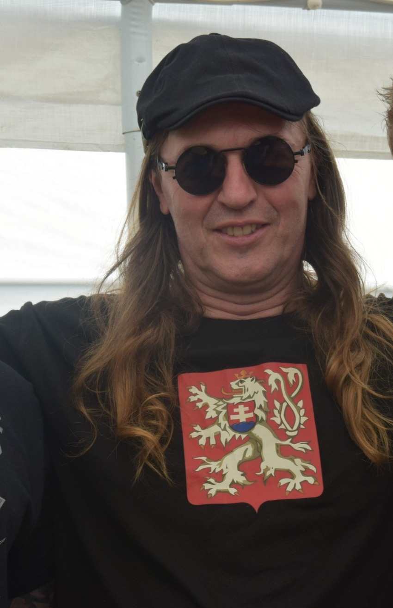

Básnická e-kniha o lásce, bolesti a všední magii
Tato sbírka vznikla jako osobní zpověď plná poezie, která mísí něhu, ironii i hořkosladkou realitu. Ideální čtení pro ty, kdo hledají hloubku i úsměv mezi řádky.
Chceš básničku jako dárek, přání nebo osobní vyznání? Napiš mi téma, náladu nebo jméno a já ti ji vytvořím na míru.
Objednat básničkuVzpomínky
Hladina modrá se kamenem rozčeří,
jak srdce naše úderem Lásky.
Tůň kámen pohltí,srdce se uklidní,
na obou zůstanou jen chvíli vrásky.
Čas všechno zahojí,zacelí rány,
jen někde hluboko vzpomínky zbudou.
Když jednou vytanou,otevřu brány,
pak sami odletí jak černý mrak.
Jako když vyplašíš divoké vrány,
však jednou vrátí se,
jako ten pták…
Jmenuji se Zdeněk Žďárský, vystupuji pod pseudonymem FonLord. Jsem básník, který rád kombinuje realitu se snem. Tvořím ze života, radostí i pádů. Moje e-kniha je výběrem toho nejupřímnějšího, co jsem kdy napsal.
E-mail: stonesilver@seznam.cz
Sleduj mě i na sociálních sítích (doplním později).